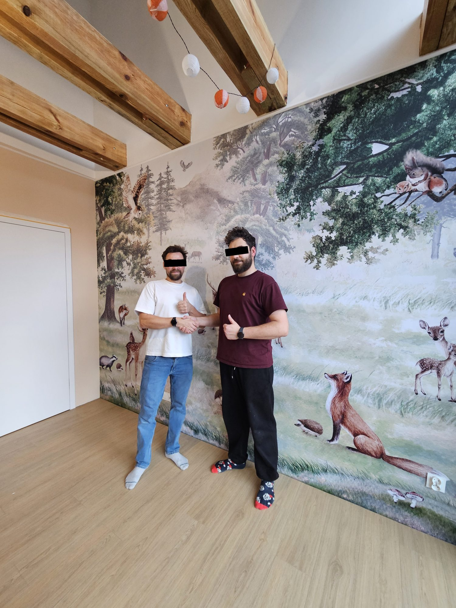

Dwóch fachowców, jedna rolka Muralfix, urządzenie Tapezierhilfe i całkowity brak poziomicy. Nasza ekipa dotarła na miejsce, zanim tapeta zdążyła sama zejść ze ściany.

Wizerunek zamaskowany na prośbę zainteresowanych. Kciuki w górę — bez komentarza.
Wzór tapety biegnie w górę pod kątem, którego nie powstydziłaby się Krzywa Wieża w Pizie. Biegły geodeta po oględzinach poprosił o krzesło i szklankę wody.
Klej nakładano metodą homeopatyczną — jedna kropla rozcieńczona na całą ścianę. Według wykonawców resztę kleju „odłożono na czarną godzinę". Czarna godzina nadeszła następnego dnia.
Gdy klej zawiódł, ekipa wdrożyła autorski system mocowania mechanicznego „Pinex Pro" — kolorowe pinezki prosto z tablicy korkowej. Ściana wygląda teraz jak gazetka szkolna w pokoju nauczycielskim, brakuje tylko planu lekcji i ogłoszenia o wywiadówce. Inwestor zakłada kapcie przed wejściem, bo pinezki mają zwyczaj spadać ostrzem do góry.
Krawędzie tapety zwijają się do środka jak liście w październiku. Przy każdym przeciągu tapeta macha do domowników. Dziecko inwestora nazwało ją „Firanką".
Przy próbie poprawki tapeta zabrała ze sobą gładź, a gładź — resztki godności wykonawców. Powstał innowacyjny produkt 2w1: tapeta z fabrycznie dołączonym tynkiem.
Niemieckie urządzenie Tapezierhilfe, stworzone, by tapetowanie było proste, równe i szybkie, zostało użyte do niczego z tych rzeczy. Według świadków wykonawcy najpierw przez 40 minut czytali instrukcję po niemiecku, potem przez kolejne 40 wmawiali sobie, że ją zrozumieli. Rolka założona odwrotnie, klej rozprowadzony tylko „tam, gdzie urządzenie samo chciało". Niemiecka precyzja spotkała polską fantazję — wygrała fantazja.
| Pozycja | Ilość | Zapłata | Status |
|---|---|---|---|
| Położenie tapety Muralfix (krzywo) | 1 ściana | Pikachu (zwykły) | Opłacone |
| Obsługa urządzenia Tapezierhilfe | 1 h nauki z YouTube | Bulbasaur | Opłacone |
| Montaż pinezek „Pinex Pro" (kolorowe) | 47 szt. | Magikarp ×47 | Sporne |
| Usługa zdjęcia gładzi (gratis) | ok. 2 m² | Psyduck | Reklamacja |
| Przerwy na papieroska i epeta | 9 szt. (83% czasu) | Koffing | Do wyjaśnienia |
| Gwarancja „do bramy" | ok. 15 m | Ditto | Wygasła |
| Konsultacja „na oko" | bez limitu | Snorlax (śpi) | Nie dotarł |
| RAZEM | 53 karty + 1 holo Charizard (żądanie) | ODMOWA |
Inwestor domaga się zwrotu Charizarda. Wykonawcy twierdzą, że karta „uległa samoistnemu odklejeniu z koszulki", podobnie jak tapeta.
Dym w pokoju dziecięcym zaklasyfikowano jako „naturalną mgłę leśną, pasującą do motywu tapety".
Numer telefonu do serwisu: „jakoś się zgadamy".
Zachęceni sukcesem wykonawcy rozważają wejście w nową branżę: oklejanie samochodów folią tą samą techniką.
Folia nałożona na oko, pod kątem jak tapeta. Auto wygląda, jakby cały czas skręcało.
Folia przypięta pinezkami do lakieru. Przy 120 km/h działa jak spadochron hamujący — gratis.
Urządzenie do tapet dostosowane do maski. Instrukcja nadal po niemiecku, nadal nieprzeczytana.
Każde auto oklejane w trybie przerw — wnętrze pachnie mango, arbuzem i papieroskiem.
Gwarancja na oklejanie aut: do bramy myjni. Potem się nie znamy.
Ściana do skucia, gładź do poprawy, wykonawcy na szkolenie BHP z obsługi kleju i zakaz palenia w promieniu bramy.
Tapeta, wbrew wszystkiemu, nadal walczy. Trzymamy kciuki. I pinezki.